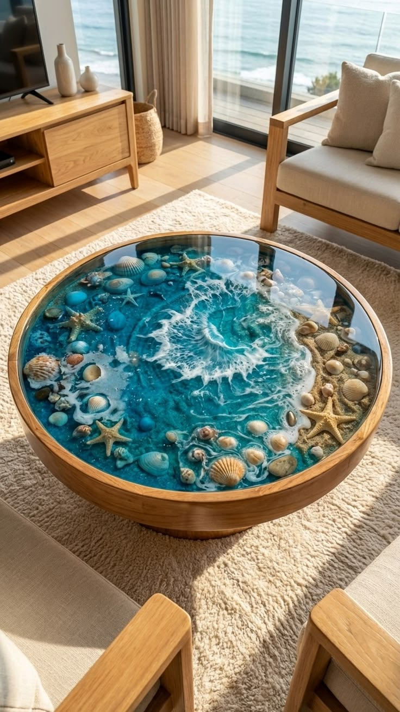
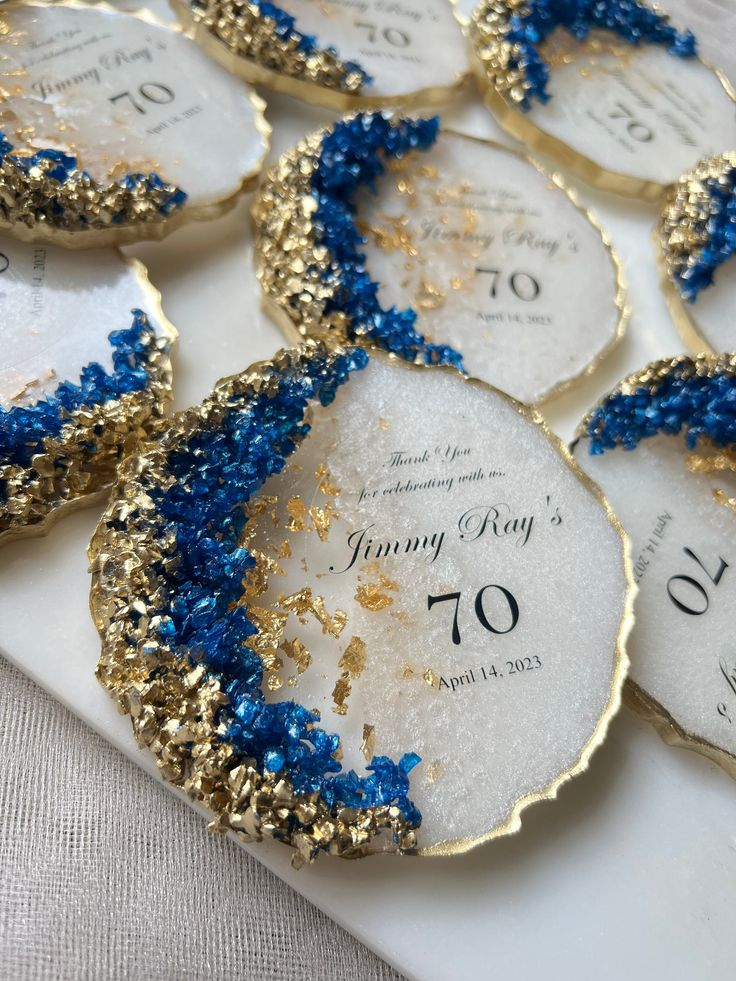
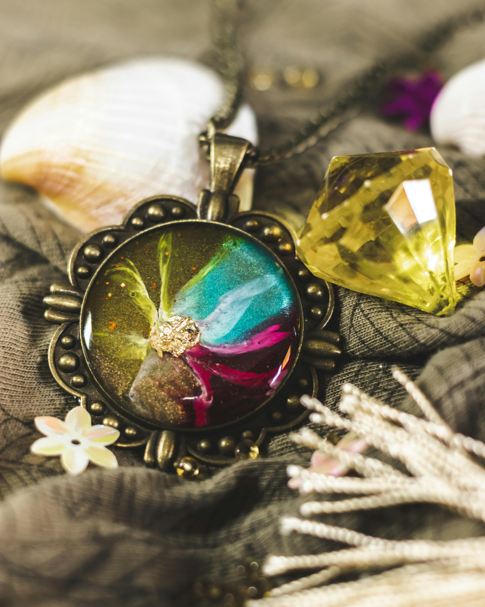
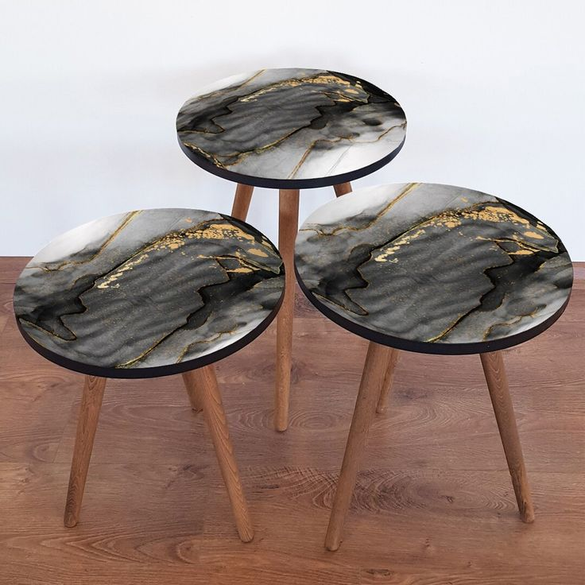
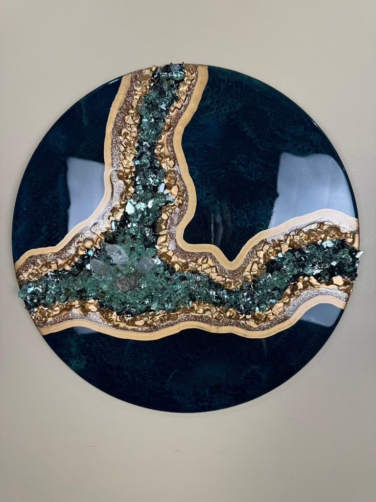
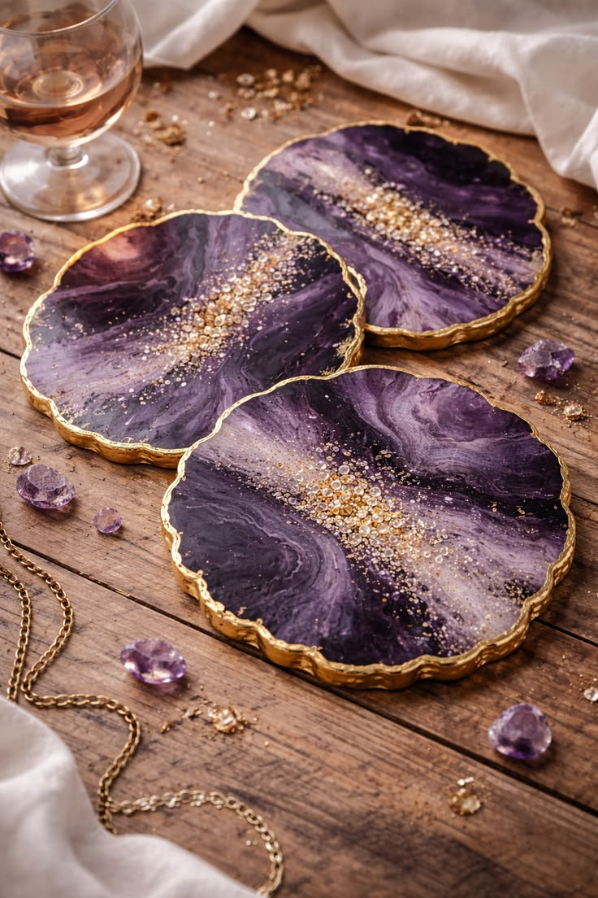
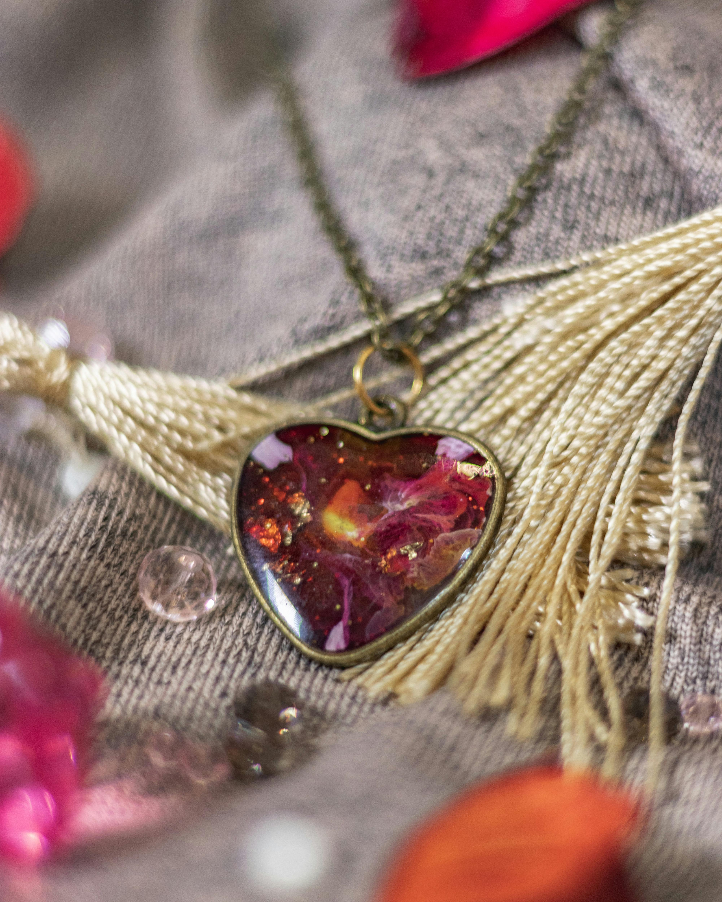
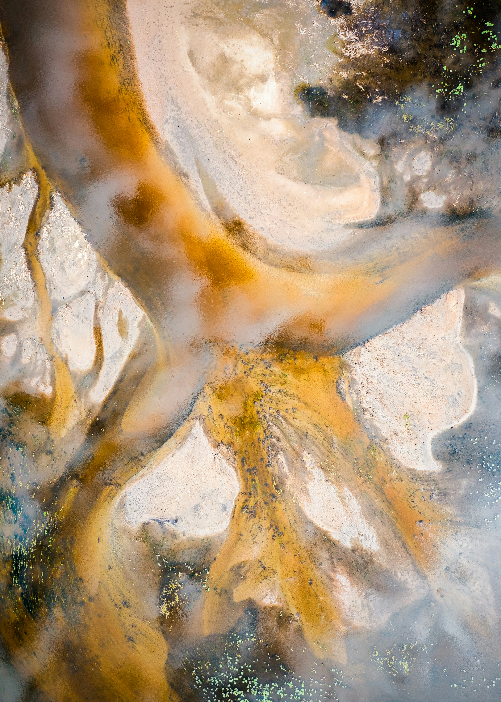
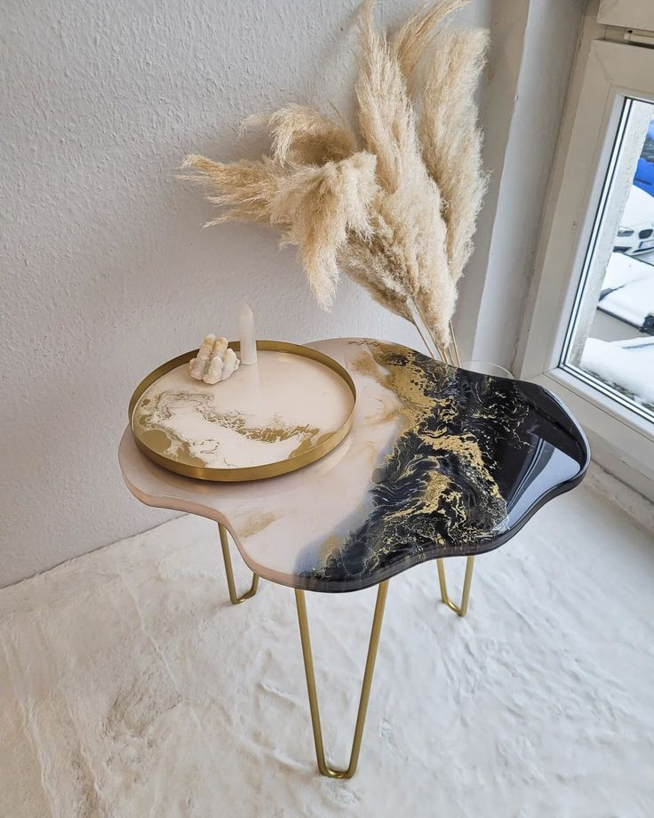
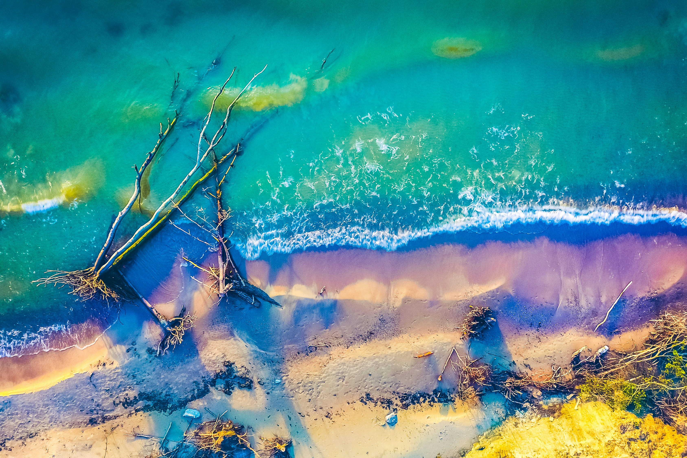

Project Gallery
A Visual Collection
A Visual Collection
of Resin Masterpieces
Every piece in this gallery was crafted in our studio for a real client. Browse by category to find your inspiration.
River Tables
Coasters
Jewelry
Wall Art









The Craft
Techniques Behind Every Piece
Each creation method is chosen carefully to serve the final aesthetic and function.
Transformations
Before & After
Drag the divider left or right to reveal the transformation — from raw material to finished masterpiece.
Before
After


⟵ Drag to Compare ⟶
Before / After
River Dining Table — Walnut & Ocean Teal
200×90cm
7-Day Cure
10K Polish
Before
After
Before / After
Marble Swirl Coasters — Rose Quartz Set of 6
10cm Round
3-Pigment Swirl
Food-Safe
Before
After
Before / After
Galaxy Pendant — UV Crystal Finish
UV Resin
Gold Flake Inlay
Artisan Certified
Before
After

 ⟵ Drag to Compare ⟶
⟵ Drag to Compare ⟶
Before / After
Abstract Wall Panel — Cobalt Blue Triptych
120×60cm
Cobalt & Silver
Wall-Ready Frame
Inspired?
Commission Your Own Piece
Share your vision — dimensions, colour palette, timber — and we'll send you a design mockup within 48 hours.